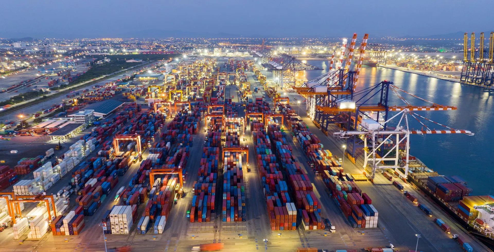
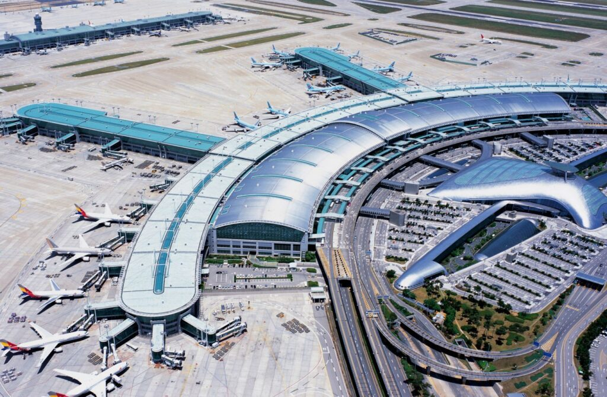

Es la rama de la ingeniería civil que se encarga de planificar, diseñar, construir y mantener infraestructuras para el transporte eficiente de personas y mercancías. Esto incluye caminos, puentes, ferrocarriles, puertos y aeropuertos.
La ingeniería portuaria se centra en el diseño de muelles, terminales, rompeolas y sistemas logísticos para el manejo de carga y pasajeros. Se consideran factores como mareas, oleajes, sedimentación y tráfico marítimo.
Un puerto eficiente es vital para el comercio internacional y el desarrollo económico de una región.
Los ingenieros civiles de transporte también diseñan pistas, plataformas, terminales y sistemas de drenaje en aeropuertos. Se analizan aspectos como el flujo de aviones, seguridad, viento cruzado y resistencia de materiales.
La construcción de aeropuertos requiere una planificación detallada para garantizar operaciones eficientes, seguras y sostenibles.